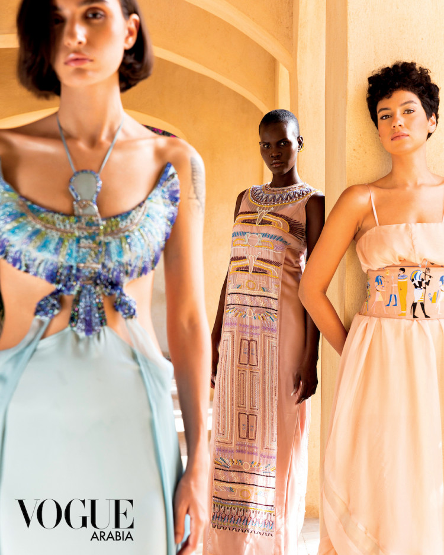
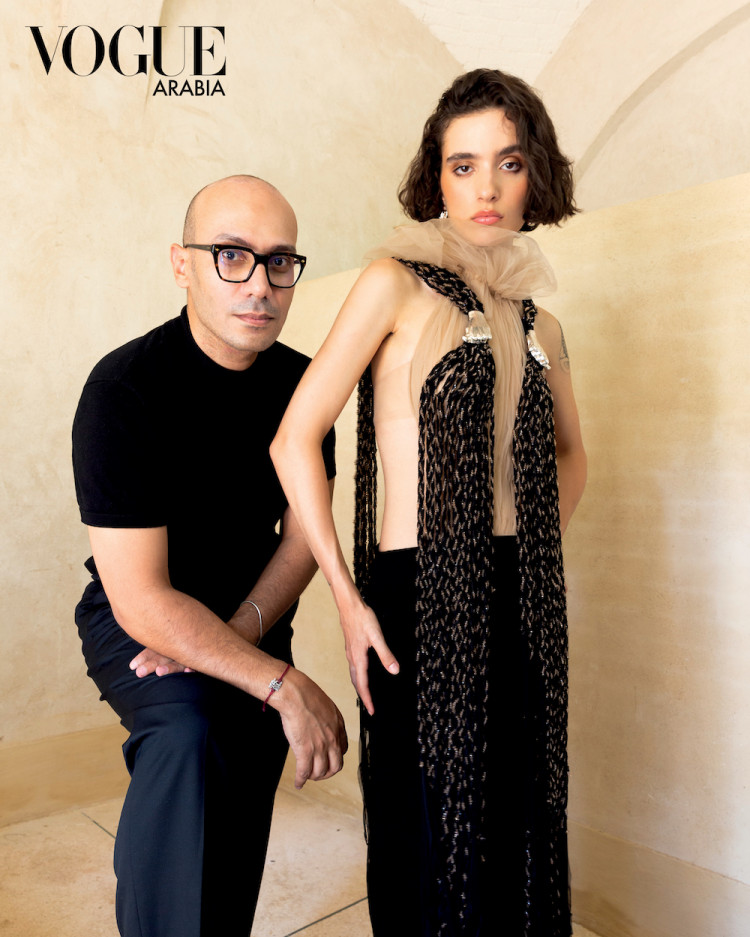
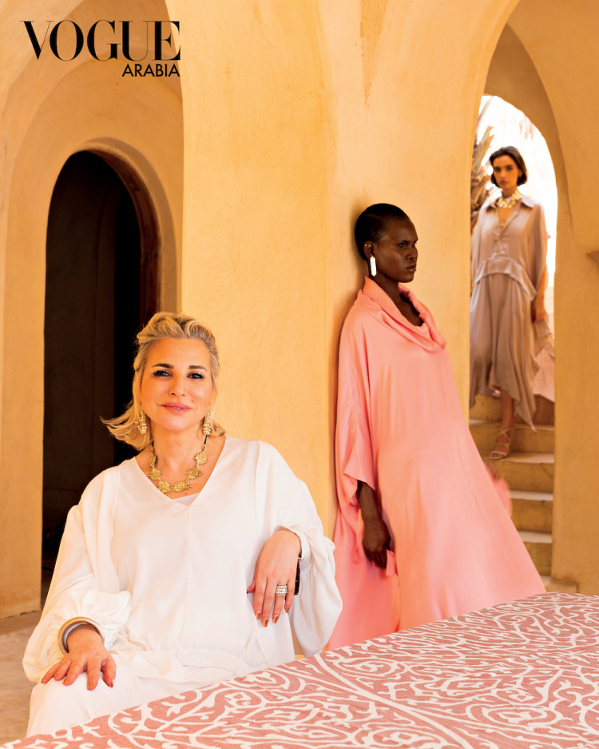
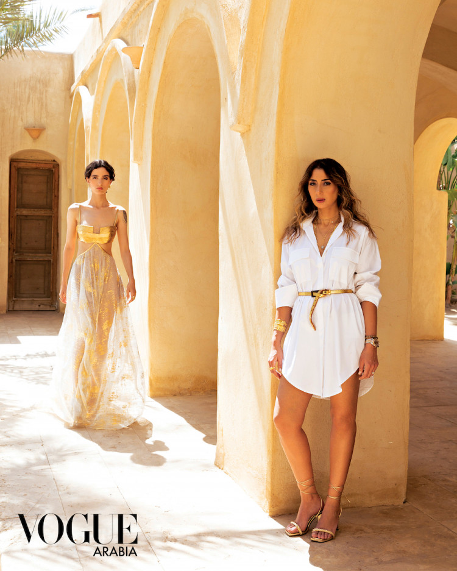
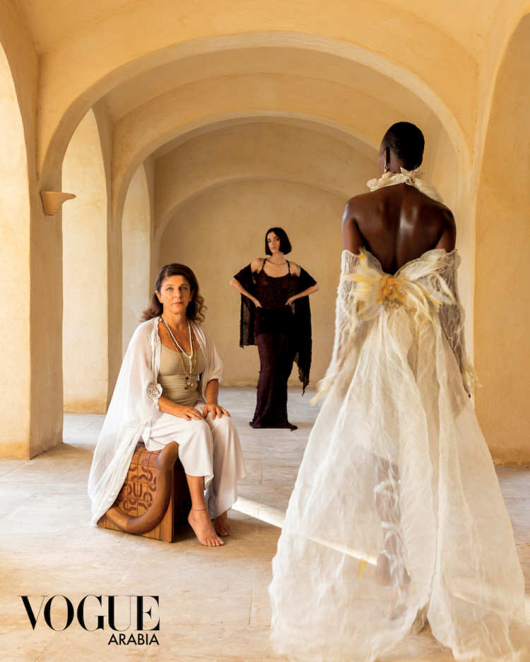

Egyptian Designers Who are Pushing Regional Fashion to the Future
650 Comments
4230 Likes
477 Share
Egypt Fashion Week saw designers from its abundantly rich homeland heralding a new era of creativity and finesse.

From Givenchy and Lanvin to Valentino and Christian Louboutin, the splendors of ancient Egypt have long been a source of inspiration for fashion houses around the world. But contemporary Egypt itself is home to an accomplished pool of designers and creatives. In May 2023, the inaugural edition of Egypt Fashion Week launched in Cairo amid much fanfare, unveiled by the Egypt Fashion and Design Council and thrusting these designers to the forefront of the global stage. Beyond honoring the past, EFW spotlighted contemporary talents, artisans, and industry leaders that make up the current regional fashion landscape, a growing textile industry, and the forces driving their future in Egypt, Africa, and the wider Middle East.
The fashion week kicked off with an exclusive event held amid the grandeur of the country’s ancient relics at the old Egyptian Museum in Downtown Cairo. In the days that followed, more than 70 designers showcased their creations among the lush greenery of the Museum of Agriculture, an architectural treasure in its own right. Dating back to 1937, the newly refurbished museum traces the history of agriculture and cotton in Egypt, from prehistoric times to the modern age, acknowledging agriculture as the basis on which ancient Egyptians built their prolific civilization.
In addition to the runway shows, exhibitions, and workshops, the event featured panel discussions from local and international experts, sharing their takes on the current and future fashion landscape, and discussing issues such as sustainability, the importance of education in the industry, connecting cultures through fashion, keeping local craftsmanship alive, and support systems for startups. The three-day fashion bonanza wrapped up with a Shop the Runway event held at Mall of Arabia. Here, Vogue Arabia spotlights the key Egyptian fashion designers who are pushing regional fashion to the future.
Saedi

Founded by Egyptian fashion designer and entrepreneur Ahmed Al-Saedi in 2012, Saedi is a celebration of “the soft warrior woman.” The persona and muse he saw in his own hardworking, yet warm and feminine mother. Inspired by female empowerment and a drive to succeed, Saedi developed a unique design aesthetic over the span of a decade, merging unconventional fabrics and cuts to create daring, original pieces. “I like solid colors, the mix of soft and hard materials in the same design,” says Al-Saedi. “I believe that every garment should tell a story that creates a personal experience relating to the owner of the piece.”
Mazoura

After dedicating her life to raising her family, Heba Abou Ouf decided to pursue her passion for design, establishing Mazoura in 2012. “I was always fascinated by the look and feel of fabrics, threads, and buttons,” she shares. “Most of my special outfits were my own creations and I was always complimented on them by friends. So, I felt it was never too late to fulfill my dream.” Inspired by global trends, Abou Ouf aimed to create a brand that addresses the need for premium quality apparel, catered to a segment of the Egyptian market that would normally shop abroad. The brand pays close attention to detail in order to execute exclusive collections that spotlight not only elegance, but also comfort, body inclusivity, and sustainability. Using the finest fabrics and the most skilled local craftsmanship, the brand offers uniquely tailored pieces at relatively affordable price points, supporting Egyptian production and local industries.
Christine Massarany

Founded in 2018 by Christine Massarany and Rami Ashraf, Christine Massarany is a semi-couture and ready-to-wear design label that draws inspiration from the female silhouette. Combining elaborate fabrics and overtly feminine lines, the brand offers exclusive statement pieces that focus on individuality and uniqueness. “For me, fashion is art,” says Massarany. “It’s not about how luxurious the brand is, it’s about a style that reflects who you are, a form of self-expression.” Inspired by Ancient Egypt, the label launched its latest collection at Egypt Fashion Week. “There’s so much beauty and mystery to draw inspiration from,” shares Massarany. “From the beaded dresses and ornate patterns to the abundant luxurious fabrics, the pieces I designed would make any woman feel royal.”
Nadine Chamaa

Lebanese designer Nadine Chamaa left Lebanon during the war in the mid Seventies as a child, moving to Cairo first for high school, and then again in 2008 to be close to her mother. This is also where she went on to establish her brand. “To see, to touch, to feel, and to be moved by beautiful fabrics has always been part of my desire for discovery,” says Chamaa. “Nadine Dans Tous Ses États is a brand inspired by a life lived in-between cultures,” she elaborates. Spirited in nature, refined, and complex, yet always evoking subtlety and delicacy, her pieces are inspired by elements of the earth. Through her various travels across South America, the Far East, and Europe, she learned to use age-old techniques such as Japanese Shibori 3D, indigo dye from Mali, and Argentinian wool felting among others. Chamaa incorporates these traditional techniques into her natural blends of fabrics such as crisp Egyptian cotton and linen, as well as upcycled materials. The label aims to stay at the forefront of sustainable fashion, offering an ethical choice to eco-conscious fashion consumers.
Sarah Bahaa
Inspired by women's innate power and strength, designer Sarah Bahaa was driven to found her eponymous label in 2021. As a supporter of sustainable fashion, Bahaa strives to highlight the importance of environmental awareness through her statement designs by ethically sourcing and using a variety of materials and upcycled fabrics. To the designer, economic status bares little worth, “You can always find a way to create art, wherever you are in life,” she states. With this philosophy in mind, Bahaa creates striking pieces from fabrics salvaged from the Egyptian Clothing Bank, such as her signature dresses that pair a simple, black body with a single, ornately beaded, voluminous sleeve. She views Egyptian Fashion Week as a breakthrough moment for her fledgling brand, allowing her to share her Egyptian aesthetic with the world.

650 Comments